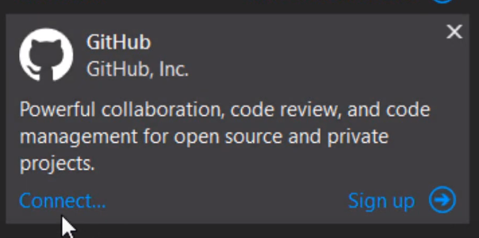
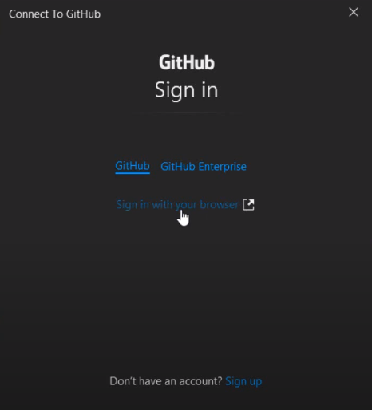
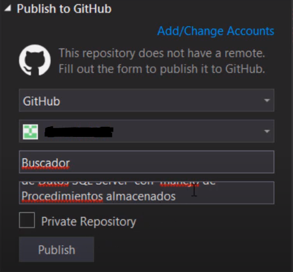

La conexión entre GitHub y VS nos permite almacenar en la nube nuestro trabajo, y poder mantener un sistema de versiones del propio proyecto.
Para instalar la extensión de GitHub en nuestro Visual Studio, accedemos a la pestaña “Extensiones” en Visual Studio, y la instalamos desde ahí, reiniciamos Visual Studio, y abrimos la pestaña “Team Explorer”, que nos permitirá iniciar sesión y crear nuestro repositorio.
Tras esto, nos permitirá subir el programa completo como un repositorio.
